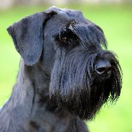
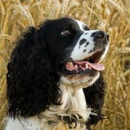
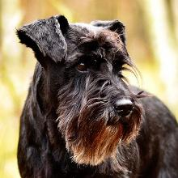

Параметры породы
- Страна происхождения: Германия
- Высота: 30-35 см
- Вес: 4-8 кг
О породе
Цвергшнауцер – универсальная собака. Он может быть охотником, чутким сторожем, строгим таможенником, а может просто озарить ваш дом лучиками радости и счастья. Об этом бравом темпераментном псе говорят: «Он всегда в хорошем настроении». Его энергия управляема, а веселый нрав цверг сохраняет даже в почтенном возрасте. Он любимец семьи, с энтузиазмом принимающий участие в коллективных праздничных весельях, походах по магазинам, выездах на природу, всегда готов составить компанию своим хозяевам, отправляющимся на пробежку или велосипедную прогулку, не прочь поиграть в футбол. Согласно рейтингу FCI, цвергшнауцеры входят в десятку самых популярных собак на планете.
Фотографии

